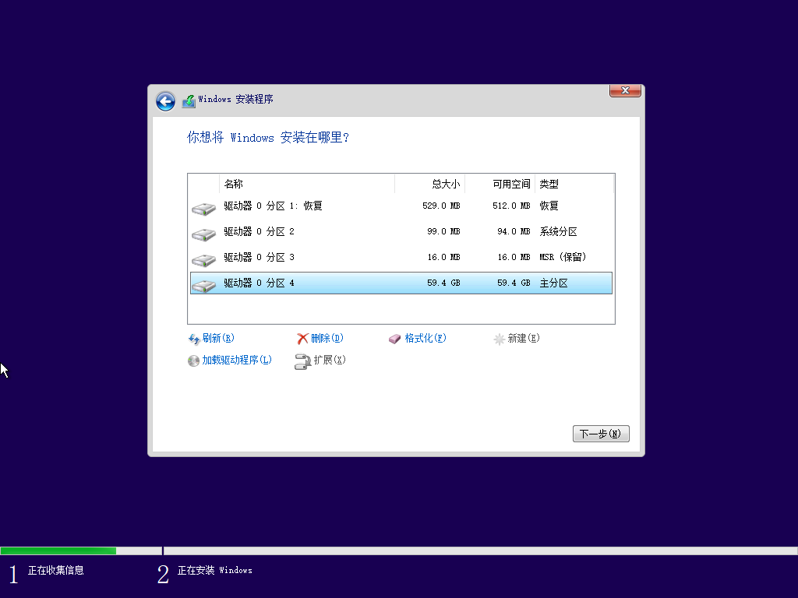

win系统安装-u盘方式
Contents
包括下载win系统镜像，制作u盘启动盘，win系统安装介绍，系统激活工具推荐。 win系统安装关键是磁盘分区。
准备工具
整个安装环境需要一台联网电脑及一个空白u盘（容量>8G)。
下载镜像
win镜像可通过微软官方或者i tell you网站下载。
微软官方。
-
点击
立即下载工具，下载MediaCreationTool.exe工具。使用win系统管理员登录（如果不知道是不是，那就肯定是）运行此程序。此工具可下载镜像、制作启动u盘或者给升级本电脑系统。 -
制作镜像

选择第二个
-
介质
u盘：可直接将u盘制作成启动盘。
ISO文件：可下载镜像，用烧录工具制作启动盘
i tell you。
点击操作系统，展开系统列表，选择需要的系统镜像进行下载（建议win10）。ed2k通过迅雷下载即可。
烧录工具
下载 rufus（win镜像烧录工具，linux为etcher），
带
p后缀的为portable版本，可免安装运行。

设备：选择自己的空白u盘。（此操作会擦除u盘所有数据）
引导类型选择：选择之前下载的win镜像。
其余默认，点击开始即开始制作启动盘。
系统安装
设置u盘启动
默认bios是加载硬盘上的操作系统，重装系统需要bios加载u盘里面的镜像完成安装。
一般主板在按电源键开机后，连续多次按f2/del键，可进入bios设置，将u盘设为第一启动项（具体根据主板型号上网搜索）。
如果主板开启了快捷启动，开机后连续多次按f8/f12可选择引导何种镜像，选择制作好的u盘后回车。
开始安装
-
进入安装程序

默认即可，下一步选择
现在安装 -
选择操作系统版本，一般选择
专业版即可
下一步接受
许可条款 -
安装方式

升级：在原有分区的基础上进行重新安装系统，可保留某些设置。
自定义：自主分区，选择分区大小、安装位置等
选择自定义安装进行分区
-
分区

选择可加载的磁盘，点击新建
-
大小以
MB为单位。平常所说的G，1G=1024MB。可通过计算器换算需要分区多少（建议102400，当重新安装系统的时候，可保留一些portable版应用及其他分区文件）。 -
当为空白磁盘分区的时候，win需要为系统文件添加一些额外的分区，大小包括在刚才设置的分区大小里面。（C盘实际大小=初始分区设置大小-win系统额外分区）
-
点击分区后的主分区，点击下一步将系统安装到此处

-
-
安装
等待安装完成后重启时。如果之前修改u盘为bios第一启动项，需要移除u盘。
如已经重新进入u盘安装过程，点击右上角的红叉，关闭安装程序后重启即可。
剩下的设置部分，默认即可。
-
设置
新建的帐户名最好是英文。
激活
Author Sloera
LastMod 2020-02-29